커리어 하운드는 어떤 사이트이고 얼마나 버나요
커리어 하운드(Career Hound)는 여러 회사 홈페이지에 직접 올라온 채용 공고를 모아서 구직자가 한곳에서 보게 해 주는 사이트예요. 기능만 보면 흔한 채용 사이트와 다르지 않아요. 만든 사람은 로만(Roman Lakhnyuk)이고, 개발자가 아니라 심리학을 공부하고 방문 판매를 하던 사람이에요.
영상 초반에 나오는 랜딩 페이지는 왼쪽에 LinkedIn/Indeed, 오른쪽에 Career Hound를 놓고 비교해요. 왼쪽은 빨간 표시로 '올린 지 1시간에 지원자 200명', '면접 회신율이 낮음', '가짜 공고'를 꼽고, 오른쪽은 초록 표시로 '경쟁이 적음', '광고되지 않는 공고', '채용팀에 직접 지원'을 내세워요.
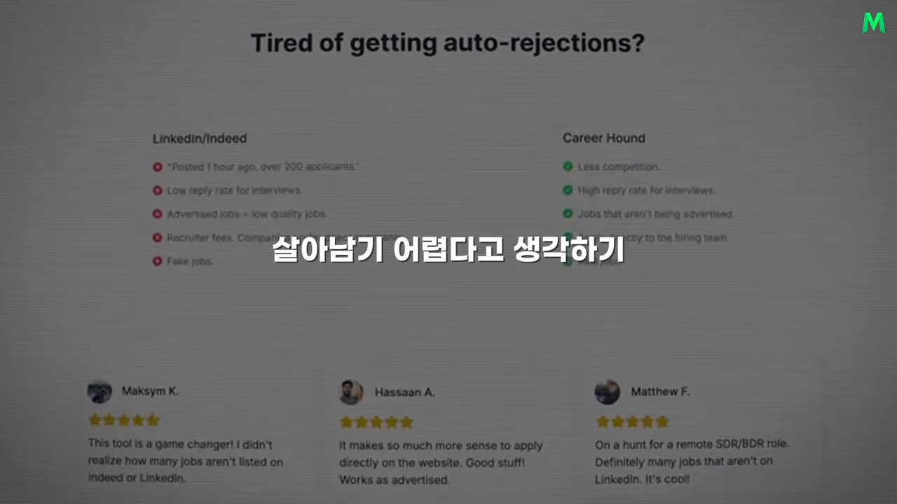
실제 사이트 안쪽은 공고 카드를 세로로 늘어놓은 목록이에요. 카드마다 직무명, 날짜, Apply 버튼이 있고, 같은 회사의 다른 공고 수가 '+7 more'처럼 붙어 있어요.
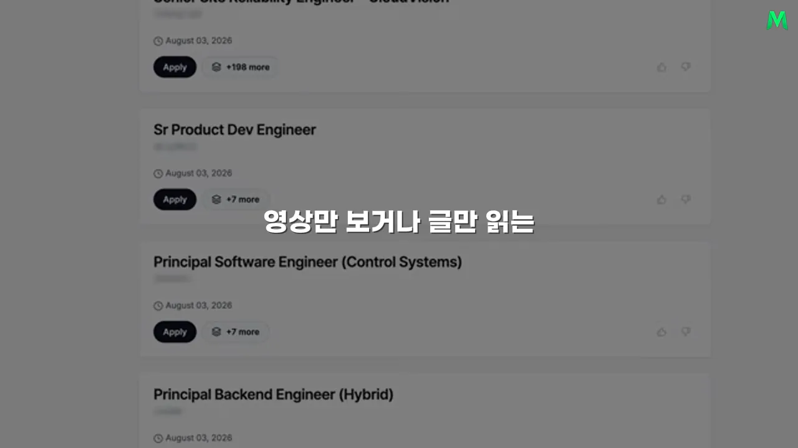
돈은 어떻게 받나요
원래 인터뷰에서 로만은 무료 요금제를 두지 않는 하드 페이월을 믿는다고 말해요. 화면의 결제 페이지에는 Lifetime 49.99달러, Monthly 17.99달러, Weekly 6.99달러 세 가지가 보여요. 인터뷰에서는 '주 7달러, 월 20달러, 연 50달러'라고 어림해서 말해요.
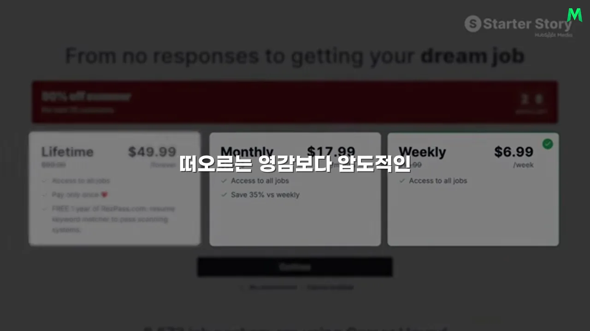
숫자로 보면
화면 아래쪽 자막 그래픽에 사용자 수와 구독자 수가 나와요. 왼쪽 users 8,000은 가입한 사람 전체이고, 오른쪽 active subscribers 779가 지금 돈을 내고 있는 사람이에요.
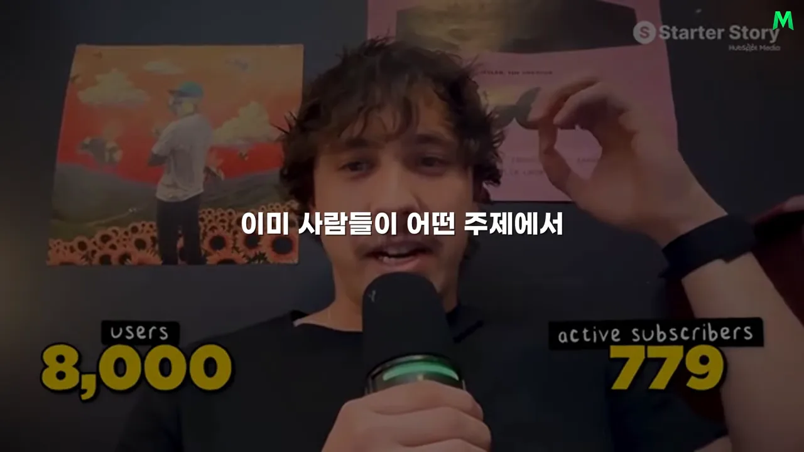
사용자 한 명이 머무는 동안 내는 돈은 평균 50달러이고, 월 이탈률은 31%예요. 원하는 직장을 찾으면 더 쓸 이유가 없는 서비스라 이탈이 높을 수밖에 없어요. 그래도 사업이 굴러가는 건 새 구직자가 계속 들어오기 때문이에요.
다음 두 장은 결제 대시보드예요. 첫 장의 Gross volume은 28,006.29달러, 아래 Net volume은 25,765.87달러예요. 둘째 장의 MRR은 12,839.16달러로, 총액의 절반에 못 미쳐요.
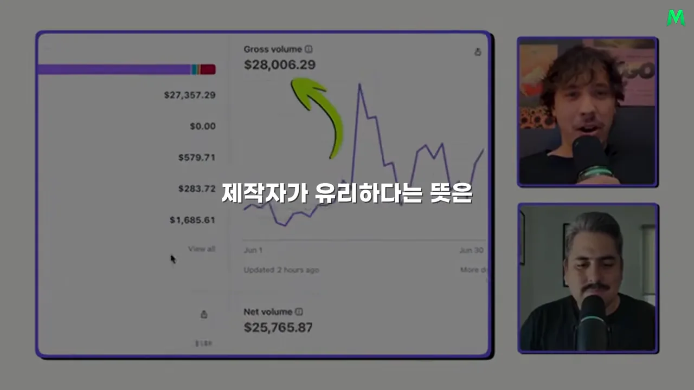
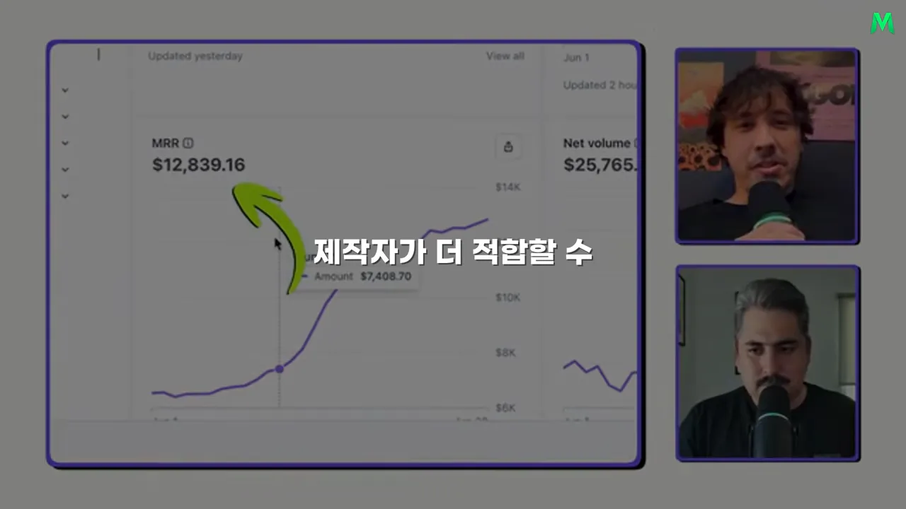
두 숫자가 이렇게 벌어지는 이유는 결제 주기가 섞여 있어서예요. 주간·월간 결제는 매달 다시 들어오지만, 장기 요금을 한 번에 낸 돈은 그달 총매출에만 크게 잡혀요. 그래서 한 달 총매출이 MRR보다 커요.
콘텐츠 쪽 숫자도 대시보드로 보여 줘요. 소셜 계정을 모아 보는 화면의 Views 칸에 최근 30일 11.7M, 즉 1,170만 회가 찍혀 있어요.
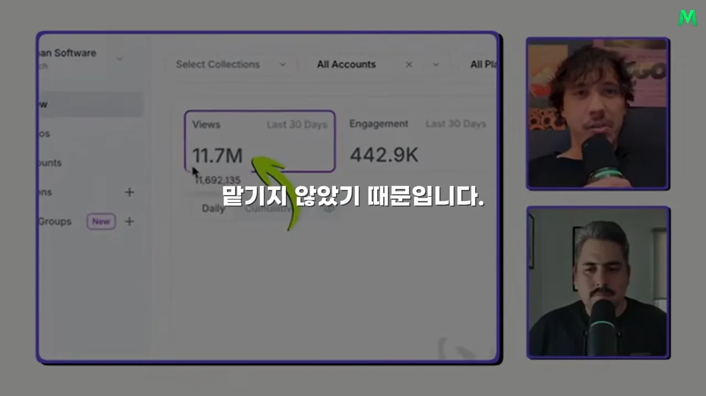
내레이션 숫자와 원래 인터뷰 숫자
내레이션은 달러를 원화로 바꾸고 일부를 반올림해서 말해요. 대략 1달러에 1,400원꼴로 환산한 값이에요. 아래 표에서 왼쪽은 이 영상의 내레이션, 오른쪽은 원래 인터뷰와 화면이에요.
| 항목 | 이 영상 내레이션 | 원래 인터뷰·화면 |
|---|---|---|
| 한 달 매출 | 약 4천만 원 (제목은 월 3천만 원) | 지난달 25k라고 소개, 총 28,006달러 |
| MRR | 약 1,700만 원 | 약 1만 2천 달러 (12,839.16달러) |
| 유료 구독자 | 약 700명 | 활성 구독 779명, 사용자 8,000명 |
| 1인당 평균 결제액 | 약 7만 원 | 50달러 |
| 월 이탈률 | 약 31% | 31% |
| 최근 30일 조회수 | 약 1,170만 | 11.7M |
원래 인터뷰 화면에는 'monthly recurring revenue $25,000'라는 자막 그래픽도 잠깐 나와요. 하지만 로만 본인은 MRR을 1만 2천 달러라고 말하고 대시보드도 같아요. 2만 5천 달러는 MRR이 아니라 한 달 매출로 보는 게 맞아요.
내가 일자리를 찾던 방법을 제품으로
시작은 거창한 시장 분석이 아니었어요. 로만은 오래전부터 사업을 하고 싶었고, 온라인에서 만난 파트너와 여러 아이디어를 고민하고 있었어요. 그러다 자기가 일자리를 찾던 중에 파트너가 직장을 구한 방법을 듣게 돼요.
파트너는 일반 채용 플랫폼만 뒤지지 않았어요. 회사들이 자기 홈페이지에 직접 올린 채용 공고를 자동으로 긁어 오는 프로그램을 만들어 일자리를 찾았어요. 두 사람은 이 개인적인 해결법을 다른 구직자도 쓸 수 있는 제품으로 바꿨어요. 원래 인터뷰의 표현으로는 '일단 판에 뛰어들어 보려고' 만든 거예요.
영상 뒷부분에 이 대목을 요약하는 자막 그래픽이 나와요. 노란 띠에 'BUILD A TOOL TO SOLVE YOUR OWN PROBLEM', 곧 '내 문제를 푸는 도구를 만들어라'라고 적혀 있어요.
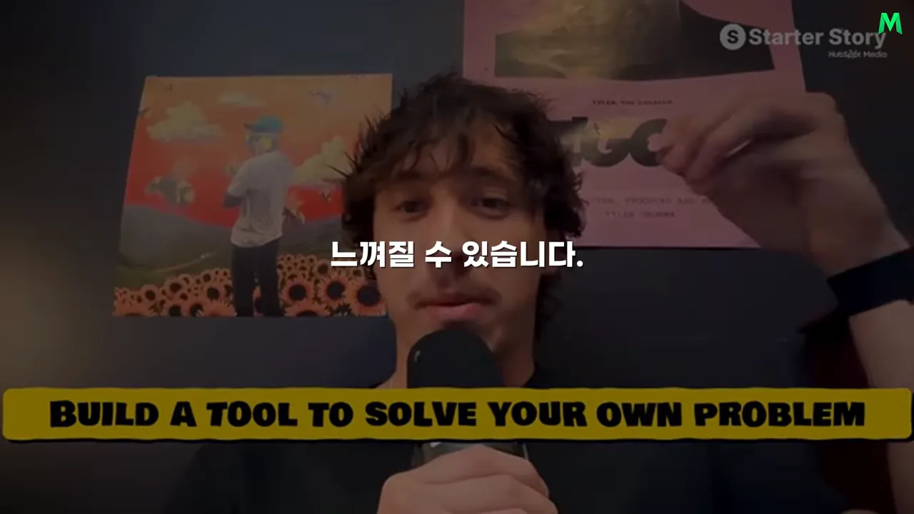
처음 목표는 크지 않았어요. 각자 월 1,000달러(내레이션은 약 140만 원) 정도였어요. 완벽한 회사를 만들기보다, 실제로 돈을 내는 고객이 있는지 확인하고 싶었던 거예요. 작은 실험은 시간이 지나며 제대로 된 사업이 됐어요.
독창성보다 검증된 시장
영상이 이 대목에서 짚는 건 아이디어가 새롭지 않았다는 점이에요. 채용 사이트는 사람들이 이미 일자리를 찾으려고 돈과 시간을 쓰는 시장이었어요. 두 사람은 없는 욕구를 만들지 않고, 분명한 욕구가 있는 곳에 '회사 홈페이지에서 직접 모은다'는 다른 수집 방식을 얹었어요.
그 차이는 사이트 첫 화면에 그대로 드러나요. 파란 배경 한가운데 'Find jobs not on LinkedIn/Indeed', 곧 '링크드인·인디드에 없는 일자리를 찾으세요'라는 한 줄이 제품 설명의 전부예요.
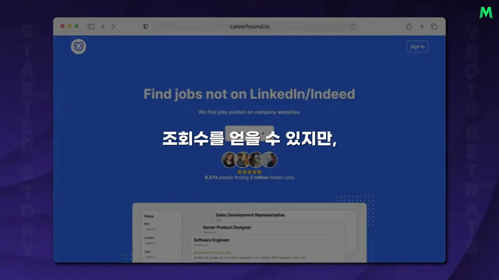
하지만 제품이 있다고 고객이 저절로 오지는 않아요. 커리어 하운드가 남들과 갈린 지점은 기능이 아니라 유통이었어요. 다음 섹션이 그 이야기예요.
진짜 차별점은 유통이에요
로만은 자기가 경쟁한 무기를 이렇게 설명해요. 제품이 아니라, 콘텐츠로 사람들의 감정을 건드리고 머릿속에 특정한 생각을 떠올리게 하는 능력이라고요. 원래 인터뷰에서 그는 이 능력이 길러질 수 있다고 덧붙여요. 자기 시장을 대량으로 조사하고, 거기서 나온 통찰로 콘텐츠를 만들면 된다는 거예요.
방문 판매에서 배운 것
그 바탕에는 두 가지 경험이 있어요. 대학에서 사람의 행동과 심리를 공부했고, 다섯 번의 여름 동안 집집마다 다니며 경보 시스템을 팔았어요. 문을 두드리면 대부분 거절당하는 환경이라, 사람의 반응을 빨리 읽고 짧은 시간에 관심을 끄는 법을 익혔어요.
영상은 로만이 X(옛 트위터)에 올린 글을 보여 줘요. 형광펜이 칠해진 줄은 'I ran teams of door to door sales people', 곧 '방문 판매 팀을 운영했다'는 문장이에요. 그 아래 줄은 이 경험이 SaaS 마케팅 캠페인을 굴리는 데 큰 강점이 됐다고 말해요.
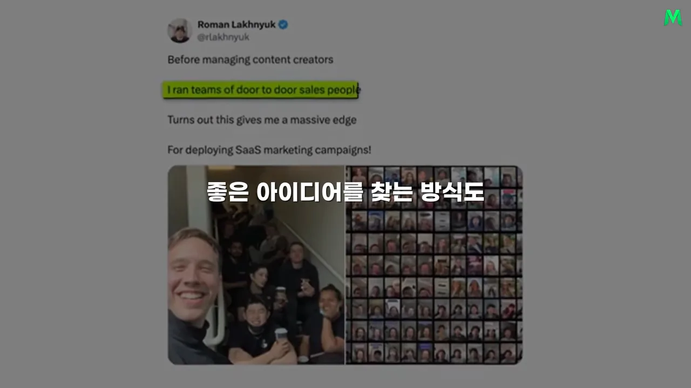
영업 팀을 관리했던 경험은 나중에 여러 콘텐츠 제작자를 관리하는 데 그대로 쓰였어요. 좋은 콘텐츠 아이디어가 있어도 다른 사람이 같은 방식으로 만들 수 있게 설명하고, 결과를 확인하고, 반복 가능한 과정으로 만들어야 규모가 커지기 때문이에요.
시의성 콘텐츠와 지속성 콘텐츠
로만의 마케팅은 콘텐츠를 두 종류로 나누는 데서 시작해요. 영상이 말한 차이를 표로 옮기면 이래요.
| 시의성 콘텐츠 | 지속성 콘텐츠 | |
|---|---|---|
| 무엇을 다루나요 | 지금 유행하는 밈, 편집 방식 | 시간이 지나도 사라지지 않는 욕구 |
| 수명 | 일주일 뒤면 관심이 식어요 | 고객이 원하는 결과가 변하지 않는 한 계속 통해요 |
| 여기에 기대면 | 매일 유행을 쫓아야 하고, 쉬면 노출이 떨어져요 | 같은 형식을 내용만 바꿔 반복할 수 있어요 |
| 커리어 하운드의 예 | 모두가 따라 하는 광고 형식 | 원격·전 세계 지원이 되는 회사 찾기 |
원래 인터뷰에서 로만은 시의성 콘텐츠의 끝을 이렇게 설명해요. 모두가 같은 형식을 쓰면 사람들이 질려서 '이건 광고구나' 하고 넘겨 버린다는 거예요. 반대로 원격으로, 전 세계 어디서나 지원할 수 있는 회사를 찾는 사람은 앞으로도 계속 있어요.
계속 돌릴 수 있는 형식 하나
커리어 하운드의 대표 콘텐츠는 세 단계로 끝나요. 첫 문장에서 원하는 사람을 정확히 부르고, 실제 회사 목록을 보여 주고, 마지막에 사이트로 안내해요. 화면에는 이 구조가 정리돼 나오지 않아서 그림으로 옮겼어요.
원래 인터뷰는 이걸 'UGC(User-Generated Content)와 콘텐츠 마케팅의 쳇바퀴에서 벗어나는 열쇠'라고 불러요. 전환이 되고 반복할 수 있는 형식을 찾으면, 매일 유행을 쫓지 않아도 된다는 뜻이에요.
콘텐츠 스리프팅으로 주제 찾기
그럼 지속성 주제는 어떻게 찾을까요. 로만은 이 방법을 콘텐츠 스리프팅(content thrifting)이라고 불러요. 내레이션은 '콘텐츠 절약 쇼핑'이라고 옮겼어요. 중고 가게에서 물건을 뒤지듯, 인스타그램·레딧·틱톡에서 자기 시장의 콘텐츠를 몇 시간씩 훑으며 눈길을 붙잡는 것을 모으는 거예요.
- 영상만, 글만으로 형식을 제한하지 않아요. 댓글, 게시물, 짧은 영상, 긴 설명을 다 봐요.
- 내 시선을 멈추게 한 문장과 구성, 사람들이 반복해서 반응하는 주제를 모아요.
- 양이 쌓이면 구직자가 자주 쓰는 표현, 계속 묻는 질문, 유행이 바뀌어도 남는 욕구가 보여요.
특별한 통찰은 갑자기 떠오르는 영감보다 압도적인 조사량에서 나오는 경우가 많습니다.
— 영상 04:55
이렇게 조사해 두면 콘텐츠를 만들 때 짐작에 기대지 않아도 돼요. 사람들이 어떤 주제에서 멈추는지 이미 알고 있으니까요. 창작은 없는 것을 만드는 일이 아니라, 관찰한 패턴을 내 제품과 고객에 맞게 조합하는 일이 돼요.
누가 말하게 하고, 어떻게 맡기나요
콘텐츠에 누가 나오는지도 고객에 맞춰 골라요. 취업 조언을 열아홉 살 제작자가 하면 믿지 않는 시청자가 있어요. 반면 경력이 느껴지는 중장년 제작자는 원래 인터뷰의 말로 '흰머리와 주름'만으로도 무의식적으로 지혜와 신뢰를 떠올리게 해요.
그렇다고 나이 많은 출연자가 늘 유리한 건 아니에요. 패션이나 젊은 문화가 중요한 시장에서는 또래의 젊은 제작자가 더 맞을 수 있어요. 핵심은 유명한 사람을 찾는 게 아니라, 내 고객이 누구 말을 믿는지 아는 거예요.
싸게, 여러 명에게 맡기는 방법
로만은 제작자 마켓플레이스도 쓰지만 대부분은 직접 메시지로 사람을 찾아요. 이미 재미로 콘텐츠를 만드는 사람들을 계속 훑어보다가, 유료로 콘텐츠를 찍어 볼 생각이 있는지 묻는 식이에요. 영상 한 편 값은 대체로 20달러(내레이션은 약 3만 원)를 넘기지 않아요.
이 값이 가능한 이유는 제작자에게 어려운 일을 맡기지 않기 때문이에요. 조사는 로만 팀이 이미 끝내 놨어요. 제작자는 노트북을 열면 형식과 대사가 정리된 시트를 보고 그대로 찍으면 돼요. 지침을 만들 때 로만이 묻는 질문은 하나예요.
Have I left any room for confusion, or is it stupid simple?
헷갈릴 여지를 남겼나, 아니면 바보같이 단순한가?
— 원래 인터뷰 (이 영상 06:00 부근)
그래서 콘텐츠를 한 번도 찍어 본 적 없는 50대에게도 맡길 수 있어요. 영상은 이게 마케팅을 키운 핵심이라고 봐요. 뛰어난 제작자 한 명의 감각에 기대면 그 사람이 떠나는 순간 시스템도 멈춰요. 조사, 형식, 촬영 지침이 사람과 분리돼 있으면 새 제작자가 와도 비슷한 결과가 나와요.
지금까지 나온 흐름을 한 줄로 이으면 이래요. 앞 섹션의 조사와 형식이 지침이 되고, 여러 제작자가 그걸 찍고, 도구로 결과를 재서 다음 실험에 반영해요.
flowchart LR A["콘텐츠 스리프팅
대량 조사"] --> B["지속성 형식
회사 목록 콘텐츠"] B --> C["형식·대사 지침 시트"] C --> D["제작자 여러 명
편당 20달러 이하"] D --> E["조회수 → 사이트 행동 → 결제
도구로 측정"] E -->|"한 가지 바꿔 다시"| B
도구는 하나의 질문에 답하도록
로만의 도구 목록은 소박해요. 영상이 소개한 것만 추리면 이래요.
| 하는 일 | 도구 |
|---|---|
| 소셜 미디어 조회수 추적 | 조회수 추적 도구 (영상은 이름을 밝히지 않아요) |
| 마케팅 실험 분석 | PostHog |
| 제작자와 연락 | |
| 방문자 행동 보기 | Microsoft Clarity |
| 서버, 이메일 | 필요한 만큼만 |
영상이 강조하는 건 도구 이름이 아니에요. 모든 도구가 '어떤 콘텐츠가 사람을 데려왔고, 그 사람이 사이트에서 어떻게 움직였고, 실제 결제까지 갔나'라는 한 질문에 답하도록 묶여 있다는 점이에요. 원래 인터뷰는 서버로 Hetzner, 메일 발송에 Postmark, 업무용 메일에 Google Suite, 그리고 Cloudflare까지 이름을 들어요.
아이디어 찾기와 실패를 쌓는 실험
로만이 권하는 아이디어 찾기도 같은 원리예요. 돈이 실제로 오가는 곳을 보라는 거예요. 영상은 두 가지 길을 소개해요.
- 제작자 중개 플랫폼 보기: 어떤 회사들이 돈을 내고 제작자에게 콘텐츠를 맡기는지 봐요. 제작자에게 계속 돈을 낼 수 있는 회사라면 어느 정도 매출이 있을 가능성이 커요.
- 앱 분석 서비스 보기: 실제로 다운로드가 일어나는 제품을 찾아요.
원래 인터뷰에서 로만은 제작자 중개 플랫폼으로 SideShift를, 앱 분석 서비스로 Sensor Tower를 이름까지 들어 말해요. 내레이션은 이름을 빼고 종류만 옮겼어요.
중요한 건 그대로 베끼는 게 아니에요. 수요가 검증된 범주를 고른 뒤, 그 안에서 내가 즐길 수 있는 문제와 고객을 골라요. 그다음 기존 회사의 콘텐츠를 연구해 내 마케팅 실험의 재료로 써요. 이렇게 하면 고객이 안 생길 때 원인을 좁힐 수 있어요. 시장은 이미 검증됐으니, 아이디어보다 실행과 유통 능력이 부족한지를 먼저 의심하면 돼요.
실패는 지워 나갈 후보예요
실패를 피해야 할 결과로만 보면 실험 횟수가 줄어요. 로만은 방문 판매 시절 '문을 하나 두드릴 때마다 판매에 가까워진다'고 생각했어요. 거절당한 문이 쌓일수록 어떤 말과 어떤 고객이 통하는지 알게 됐기 때문이에요.
마케팅 실험도 같아요. 영상 하나가 실패했다고 사업 전체가 틀린 건 아니에요. 영상이 꼽는 점검 항목은 세 가지예요.
- 훅이 약했나요?
- 제작자가 고객과 안 맞았나요?
- 행동 유도가 약했나요?
안 되는 걸 하나씩 지우면 되는 쪽에 가까워져요. 요령은 같은 실패를 무심코 되풀이하지 않는 거예요. 결과를 기록하고, 다음 실험에서는 한 가지만 바꿔요.
첫 수익까지
원래 인터뷰의 오프닝은 이 이야기 전체를 세 줄로 요약해요. 화면 아래 번호 1, 2, 3에 각각 '월 2만 5천 달러를 버는 단순한 웹사이트', '같은 콘텐츠로 수백만 조회수', '지루한 제품, 똑똑한 마케팅'이라고 적혀 있어요.
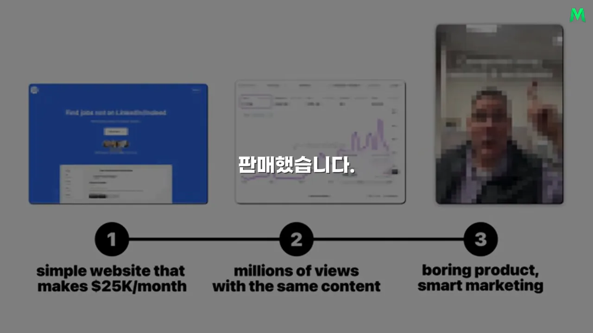
로만은 온라인에서 첫 돈을 버는 순간 '나도 할 수 있다'는 믿음이 확 달라진다고 말해요. 그전까지 인터넷 사업은 남들만 하는 일처럼 느껴져요. 작은 금액이라도 실제 고객이 결제하면 제품과 마케팅이 현실에서 통한다는 근거가 생겨요.
그 첫 수익까지 필요한 건 천재성보다 꾸준한 믿음과 실험이에요. 검증된 시장을 고르고, 고객을 깊게 관찰하고, 반복 가능한 콘텐츠를 만들고, 결과를 재는 일을 몇 년 이어 가는 거예요.
영상은 이렇게 마무리해요. 좋은 제품을 만드는 능력과 사람들이 그 제품을 발견하게 하는 능력은 서로 다른 능력이에요. 경쟁이 많은 시장에서 살아남는 길은 경쟁자 없는 곳을 찾는 것만이 아니에요. 모두가 아는 시장에서도 고객을 더 오래 관찰하고, 더 많이 실험하고, 배운 걸 빨리 실행하면 기회가 생겨요.